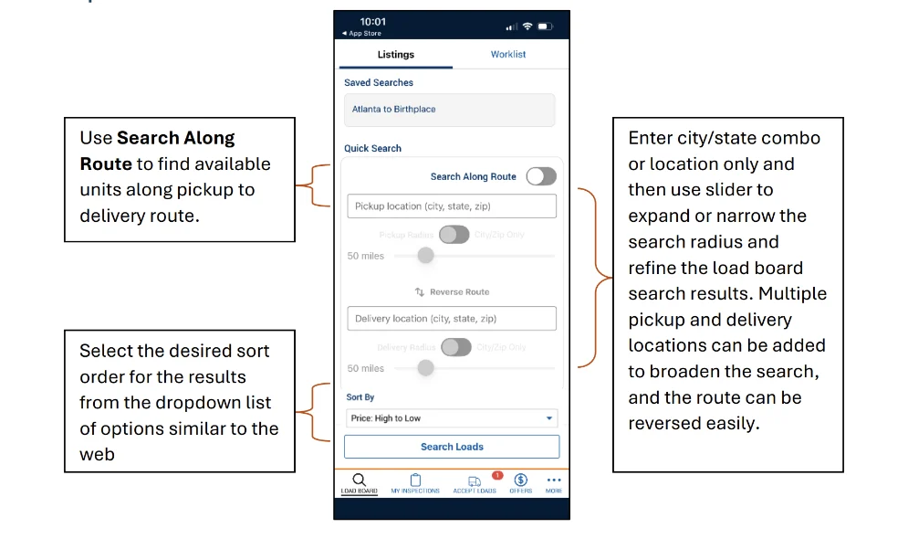

Central Dispatch
Find the next load, from a phone.
Mobile search for carriers in automotive logistics. I collaborated with UX Research, Product, and Software Engineering on the search launch.
Explore the search flow
- Focus
- Carrier mobile search
- Team
- Shipment Solutions
- Company
- Cox Automotive
- Project scope
- Public launch overview
A load board for work on the move.
Carriers use Central Dispatch to find vehicles to transport. Bringing search into the carrier app gives them access to listings away from a desktop.
The core task is to find loads for a route, review the details, and keep relevant options in a worklist. The published mobile flow supports that task through saved searches, filters, load details, and a worklist that syncs with the web.
From a route to a worklist.
The public product guide documents four connected parts of the experience.
Start a search
Enter pickup and delivery locations or choose a saved search.
Narrow the results
Apply filters, then adjust or remove them as the search changes.
Review a load
Compare route, payment, shipper rating, and vehicles per load.
Keep a shortlist
Add loads to the worklist from results or the load detail page.
Set the search area


View imageRead the screen
- Search Along Route
- The toggle above the pickup field includes vehicles along the route.
- Pickup and delivery radius
- The sliders change how far the search extends around each location. Reverse Route swaps the endpoints.
- Sort By
- The example orders listings by price, from high to low.
Compare available loads
 View image
View image Read the screen
- Applied filters
- The chips above the list show the pickup and delivery filters. Filter & Sort lets carriers adjust them.
- Load cards
- Pickup and delivery locations sit beside vehicle, payment, and shipper information. Distance and cost per mile appear beneath each listing.
- Worklist
- The top tab opens saved loads.
My contribution.
My work sits within the Central Dispatch Shipment Solutions team. I partnered with UX Research, Product, and Software Engineering on the launch of search in the carrier mobile app.
My public launch update also recognized a Team Titan Business Award for customer experience, innovation, and service to the team.
A launched search experience.
The launch announcement and product guide document mobile search in the carrier app. They show a path from finding a load to keeping it in a synchronized worklist.
About this overview
This page covers the public launch and product flow. Detailed design decisions, individual screen ownership, and performance results are not included in the public material.
Product documentation
- Carrier mobile search guide (opens in a new tab)
- Launch announcement (opens in a new tab)
- Professional profile (opens in a new tab)
Product imagery belongs to Central Dispatch / Cox Automotive. Screens document the published experience; they do not establish individual design ownership.